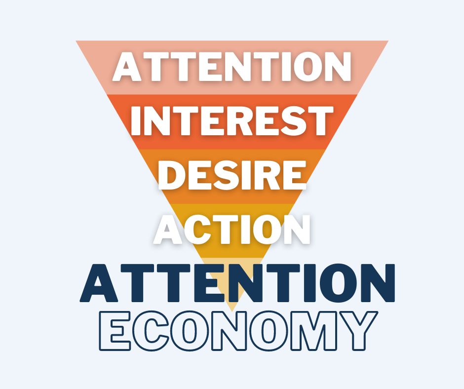

為什麼這很重要？
根據 Facebook 創始總裁尚恩．帕克（Sean Parker）的說法，Facebook 創立時的一個目標為：「如何盡可能地消耗用戶的時間以及抓住用戶的注意力。」
在這個資訊爆炸的時代，注意力已成為一種稀缺且寶貴的資產。不論是品牌、公司，還是政治人物，要想在社群媒體平台上獲得越來越多的關注，都需要抓住你的注意力。而要達到這個目的，通常是靠著在平台上製造和散播引人注意的訊息，即使這些訊息並不完全真實。
假新聞 ≠ 惡意不實訊息
不真實的訊息並不一定就是「假新聞」。
「假新聞」一詞自 2016 年開始流行，指的是蓄意鋪陳或完全捏造，並以主流新聞報導形式呈現的新聞，其目的是聳人聽聞、挑動情緒，以及誤導公眾視聽。假新聞是惡意不實訊息的一種形式，惡意不實訊息指的是故意製造的虛假訊息，其目的是傷害個人、社會群體、組織或國家。
因此，你在社群媒體上看到的可疑訊息，絕大多數很可能都是惡意散播之不實訊息。假新聞可造成非常嚴重的破壞，但惡意不實訊息的散播活動卻很難予以究責。
社群媒體與精準投放
你在網路上所有的行為都受到 Facebook、Google 和其他大型科技公司所監看。這些公司持續蒐集你的資料，不論是你按讚的貼文、搜尋的關鍵詞、點擊的廣告，還是瀏覽的影片，都受到蒐集，這些資料被用來分析、分類和預測你的行為。
有了這些資料，行銷公司就能用來對你投放廣告，或將廣告置入訊息中，目的是刺激你購買不需要的東西，或是影響你的投票決定。
此外，社群媒體的演算法也加劇了惡意不實訊息傳播的速度。人們在訊息過量時，只能將有限的精力用來處理最能吸引他們注意的訊息，而有可能煽動或製造恐懼的訊息更能引起人們的注意。
同溫層現象與極化效應
研究發現，社群媒體用戶較容易接受與自己意見或價值觀相近的聲音，進而形成所謂的同溫層現象。在這種情況下，用戶很難接觸到與自己觀點或價值觀不同的訊息。
根據從用戶過去行為所蒐集到的資料，搜尋引擎和社群媒體平台提供個人化推薦，然後根據你最有可能同意的內容，對出現在你動態消息頁面上的訊息進行排序。這不僅會進一步加深人們的偏見，也使人們容易成為兩極化的受害者。因此，演算法和人類本性共同造成了兩極化，而惡意不實訊息又加劇了其效應。
總結
總而言之，惡意不實訊息符合人類行為模式和認知偏見的本質，因此難以抵制。而在演算法的助推下，惡意不實訊息已成為數位時代的重大挑戰。雖然許多組織正在努力對抗這個問題，但由於人類的複雜性，這個問題可能無法獲得徹底解決。即便如此，當你遇到有人相信某些惡意不實訊息時，試着以同理心去理解他們。因為只有透過更多的人際互動、更多的事實，以及更多的對話和相互理解，才能減輕惡意不實訊息所造成的衝擊，讓社會免於走向兩極化分裂。